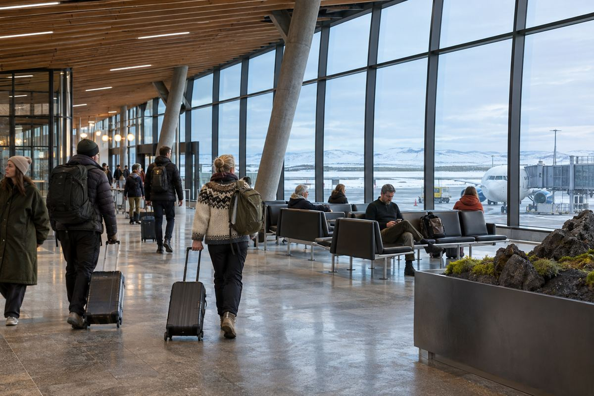
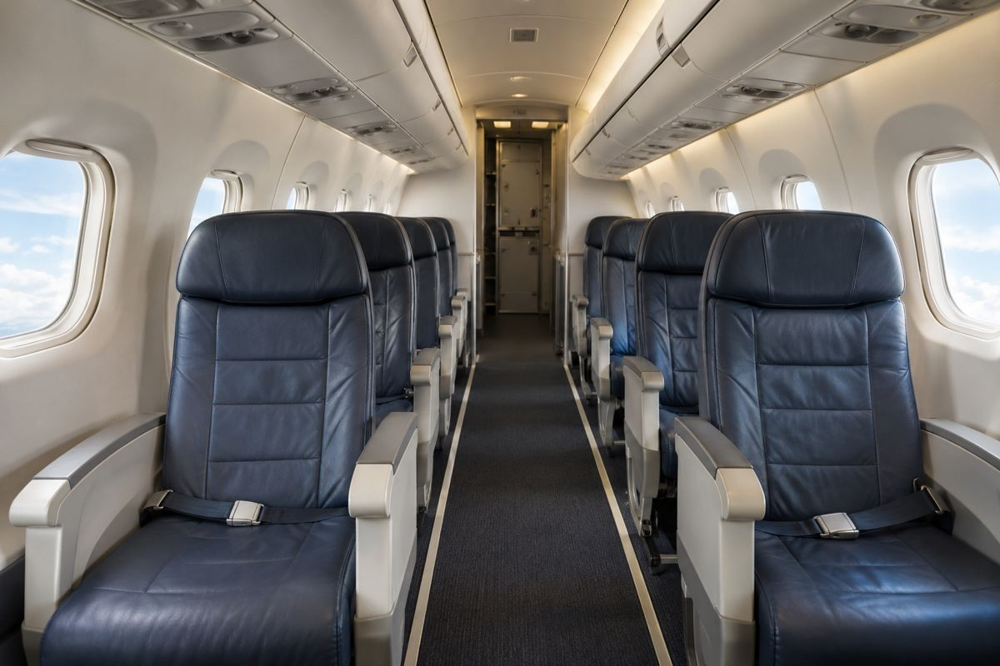
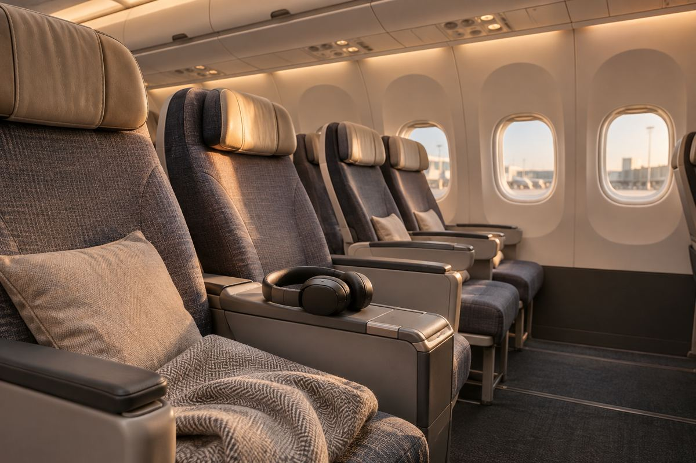
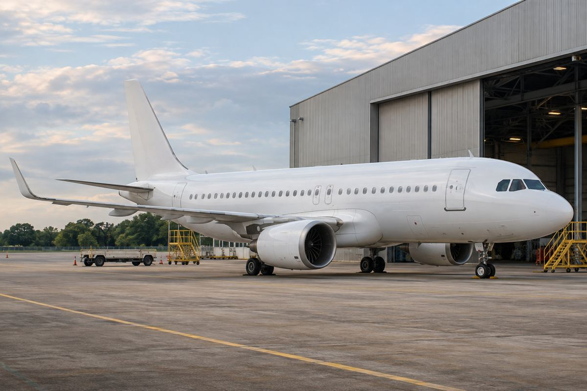
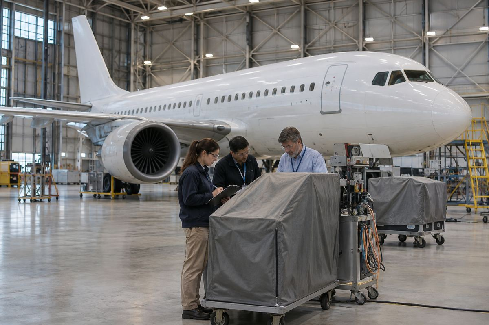

최신 항공 뉴스
국제선
아이슬란드에서 영국 북부로, easyJet 두 노선은 이미 운항 중
11월 6일 공항 발표는 뉴캐슬 10월 27일, 리버풀 11월 2일 시작을 확인했다. 두 노선 모두 주 2회 겨울편이다.
읽기 ↗
최신 항공 뉴스
국제선
11월 6일 공항 발표는 뉴캐슬 10월 27일, 리버풀 11월 2일 시작을 확인했다. 두 노선 모두 주 2회 겨울편이다.
읽기 ↗
노선·객실
푸에르토바야르타에 이어 미국·멕시코 세 도시를 더한다. 132석 E195-E2와 운임별 식사 조건을 함께 살펴봤다.
읽기 ↗
기내 경험
11월 6일부터 새 음악을 제공한다고 발표했다. 5곡 앨범은 좌석이나 기종이 아닌 항공사의 소리 정체성을 확장한다.
읽기 ↗
항공기 발주
11월 4일 계약 확정을 발표했다. 주문 잔고와 실제 인도·취항은 서로 다른 단계다.
읽기 ↗
항공 연구
에어버스가 ATRA의 가동 검증 완료를 알렸다. 2025년 구조 변경 후 첫 비행과 이번 시스템 검증은 다른 단계다.
읽기 ↗
항공사·기단
유럽 기단에서 E195-E2의 역할을 키우는 방안을 발표했다. 좌석을 채우는 효율과 장거리 연결을 함께 바꾸는 계획이다.
읽기 ↗
기재·첫 운항
10월 30일 첫 여객 운항을 마쳤다. 첫 비행의 기념성과 이후 정기 배치의 실용적인 의미를 살펴봤다.
읽기 ↗
항공사 제휴
초기 지분 44.9% 인수 계약을 체결했다. 거래 종결에는 규제 승인이 남아 있으며, 승객 혜택도 계약만으로 즉시 바뀌지는 않는다.
읽기 ↗
공항·디지털
고정 카운터 대신 태블릿을 든 직원, 실시간 안내 화면과 작업 공간을 결합했다. 공항 전체가 바뀐 것은 아니다.
읽기 ↗
객실·아시아
뮌헨 노선의 새 객실 운항을 발표했다. 12월에는 A350-1000과 A350-900을 교대로 배치할 계획이다.
읽기 ↗
노선
루프트한자가 주 5회로 운항을 시작했다. 야간 출발과 다음 날 아침 도착이라는 시간표를 여행자의 관점에서 읽었다.
읽기 ↗
운임·환경
루프트한자 그룹이 운임 이름을 바꿨다. SAF 활용과 외부 기후사업 지원은 구분해서 읽어야 한다.
읽기 ↗
마일리지·여행
미쉐린 가이드와 협업을 발표했다. 2027년 체험 일정이 예고됐지만 필요한 마일과 상세 조건은 별도 확인이 필요하다.
읽기 ↗
정비·산업
에어버스와 에어프랑스가 부품 지원 합작사를 설립했다. 정비에서는 고장 진단만큼 교체품이 도착하는 시간이 중요하다.
읽기 ↗
정비 해설
에어버스가 FHS의 부품 지원 구조를 소개했다. 비용을 예측하는 계약과 정비 작업의 기준은 구분해야 한다.
읽기 ↗기재·노선
취리히–뭄바이에 새 객실을 투입한다. 1월 4일부터는 노선은 매일 유지하지만 A350은 주 6일 운항할 계획이다.
읽기 ↗운항·서비스
11월 27일~12월 21일 운항을 예고했다. 신규 도입 예정 기재는 인증 완료 전까지 기내 인터넷을 제공하지 못할 전망이다.
읽기 ↗조종사 교육
첫 교육생은 2027년 튀니지에서 훈련을 시작할 계획이다. 유럽 기준 교육 이후 인도 면허 전환 절차가 남는다.
읽기 ↗기내 연결
QR 인증으로 개인 보관함을 불러온다. 대상 화면과 통신 장비가 갖춰진 편부터 시작하며 내년 봄 기단 절반으로 확대할 계획이다.
읽기 ↗항공사 경영
2026/27 회계연도 상반기 실적을 11월 5일 발표했다. 비교 기준은 작년 같은 반기이며, 현금 잔액은 3월 말과 비교했다.
읽기 ↗노선
11월 4일 첫 운항을 발표한 QR783은 도하에서 보고타를 거쳐 카라카스로 간 뒤 도하로 돌아온다. 세 도시를 잇는 순서가 예약 조건을 좌우한다.
읽기 ↗항공사 제휴
런던행과 연결되는 Viva 운항편에 영국항공 편명이 붙는다. 예약 편의가 늘어나는 만큼 실제 운항사와 항공권 조건을 읽어야 한다.
읽기 ↗
항공 화물
서버 랙과 GPU 등 장비를 위한 우선 적재·전문 취급·운송 상태 추적을 묶었다. 데이터센터 일정에서 항공 운송이 맡는 역할을 살펴봤다.
읽기 ↗노선·객실
호찌민은 11월 1일부터 하루 두 편에 A350을 배치하는 일정이다. 하노이 두 편은 12월 1일 전환 예정이다.
읽기 ↗기내 서비스
두바이와 인도 9개 도시를 오가는 대상편에 전 객실용 디왈리 과자를 마련한다. 발표일과 제공일을 구분해 정리했다.
읽기 ↗항공기·노선
Airbus가 A220의 노선 운용 사례를 소개했다. 중요한 질문은 얼마나 멀리 나는가보다, 어떤 수요를 직항으로 연결할 수 있는가다.
읽기 ↗
항공 기술
MATe·VPT·Flight eLearning을 Skywise에 통합한다. 가상 조종석은 실제 비행 전에 절차를 익히는 학습 공간으로 쓰인다.
읽기 ↗
항공 기술
Airbus는 프랑스 DGA가 U010 Aliaca의 VTOL 형식을 공식 인증했다고 밝혔다. 인증과 실제 배치는 구분해서 읽어야 한다.
읽기 ↗
항공 화물
보잉과 아이슬리스가 767 한 대를 화물기로 개조하기로 했다. 추가 두 대는 옵션으로 남겨뒀다.
읽기 ↗

항공사
Airbus는 페로제도 항공사 Atlantic Airways가 A320neo 두 대를 추가 주문했다고 발표했습니다.
읽기 ↗